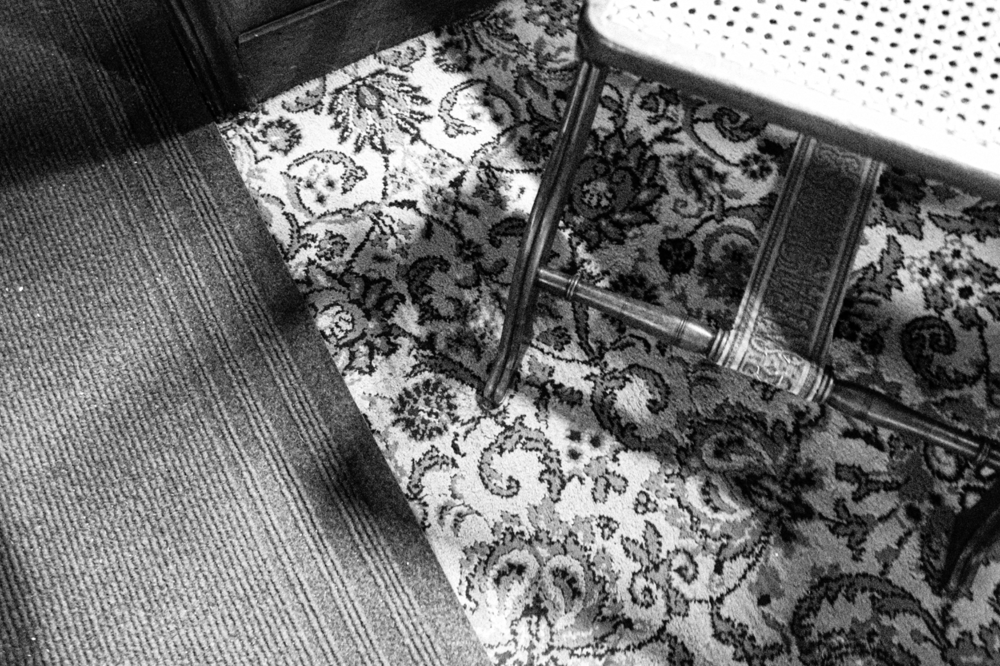
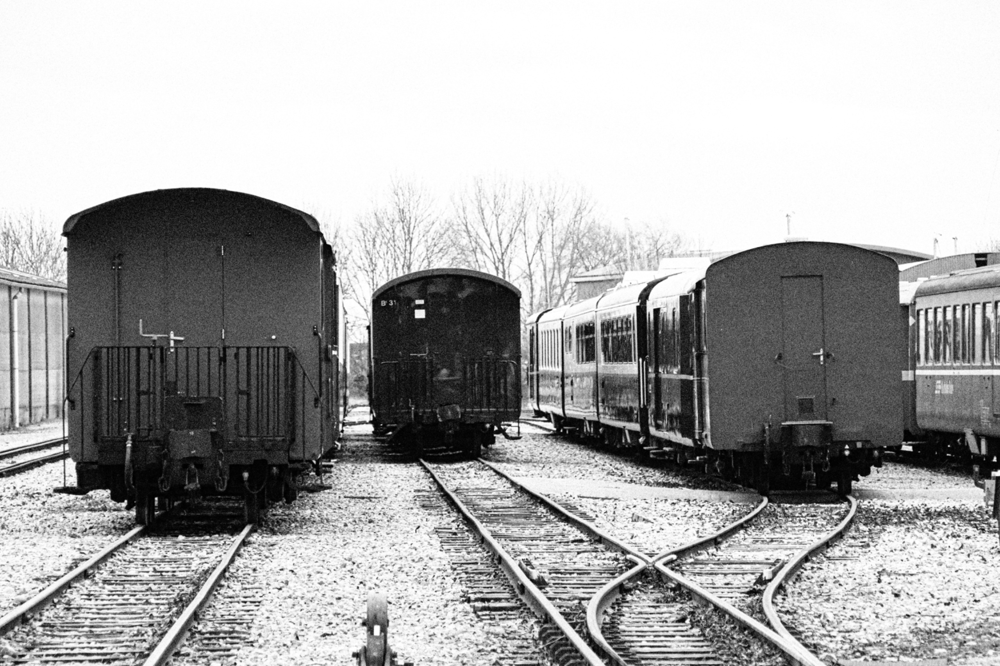
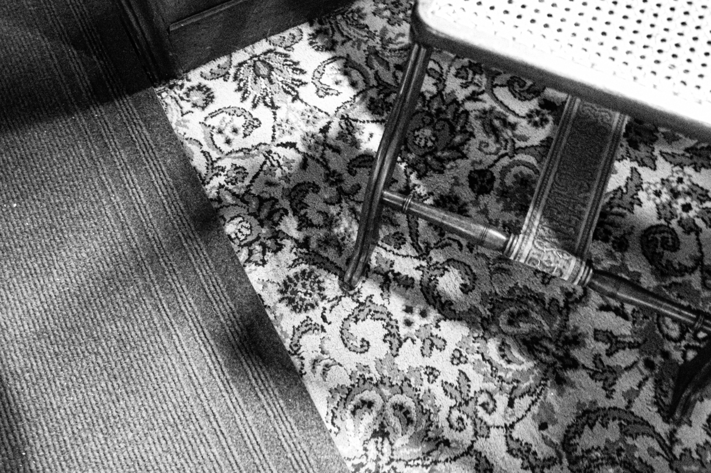
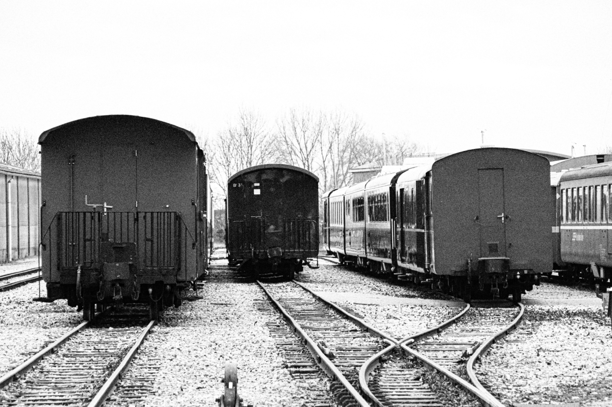
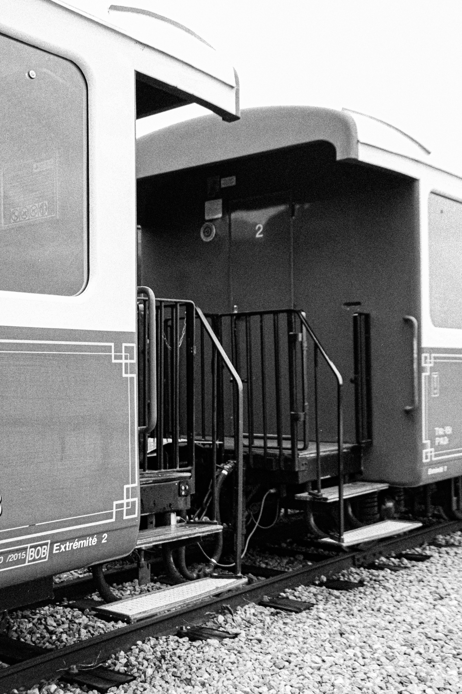
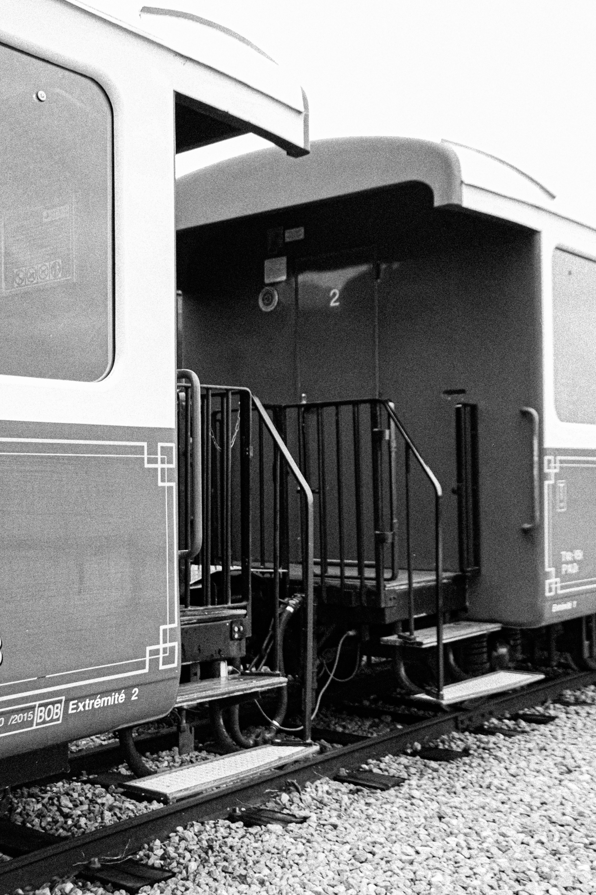

Indatable
Cette série en noir et blanc, intitulée Indatable, immortalise des vieux wagons à la gare CFBS (Chemin de Fer de la Baie de Somme) de saint Valéry, dans une esthétique volontairement intemporelle, plongeant le spectateur dans une époque floue, comme suspendue entre le passé et le présent.
Ces wagons abandonnés, marqués par le passage des années, deviennent des témoins silencieux d’histoires inconnues et de voyages oubliés.
Les contrastes appuyés et les textures granuleuses mettent en lumière la patine du métal, le bois usé, et les détails qui évoquent un autre temps.
Indatable cherche à rendre le temps incertain, à brouiller les frontières entre hier et aujourd’hui, mais cette série fait aussi hommage à l'association CFBS.
Février 2024
Photographie

 



 
